Luk Jiab · Chicken Farm Bot
A LINE chatbot for a pullet farm that closes the whole loop: the owner plans, the bot reminds workers in the LINE group, workers report through LIFF, and everything is stored in a Google Sheet. Built with Next.js 16 + LINE Messaging API + LIFF + Vercel in a single session.
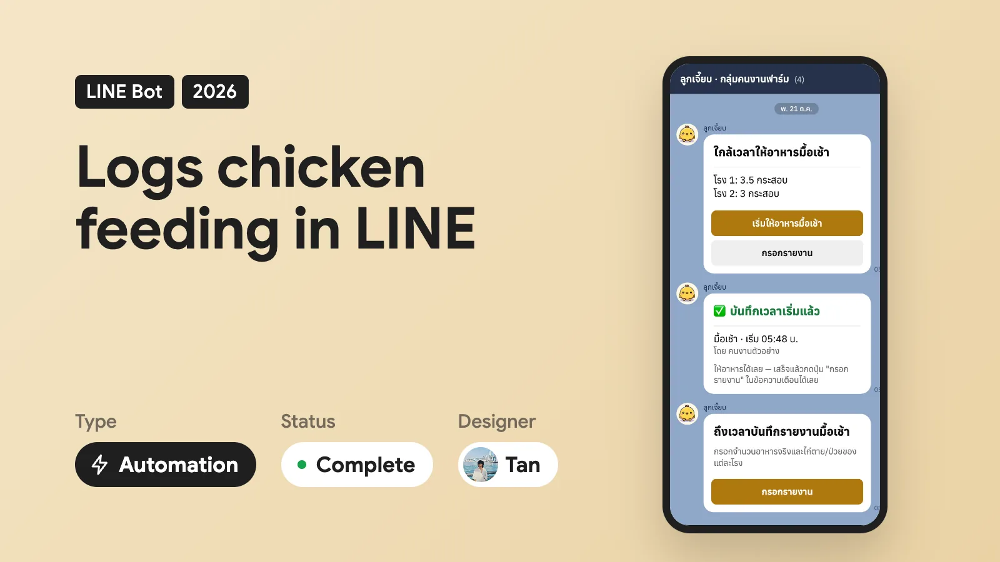
A LINE chatbot for a pullet farm. The owner plans 3 meals a day, the bot reminds workers in the group chat on time, workers report through a LIFF form, and everything lands in Google Sheets automatically.
The problem
Why does feeding on a pullet farm need a system?
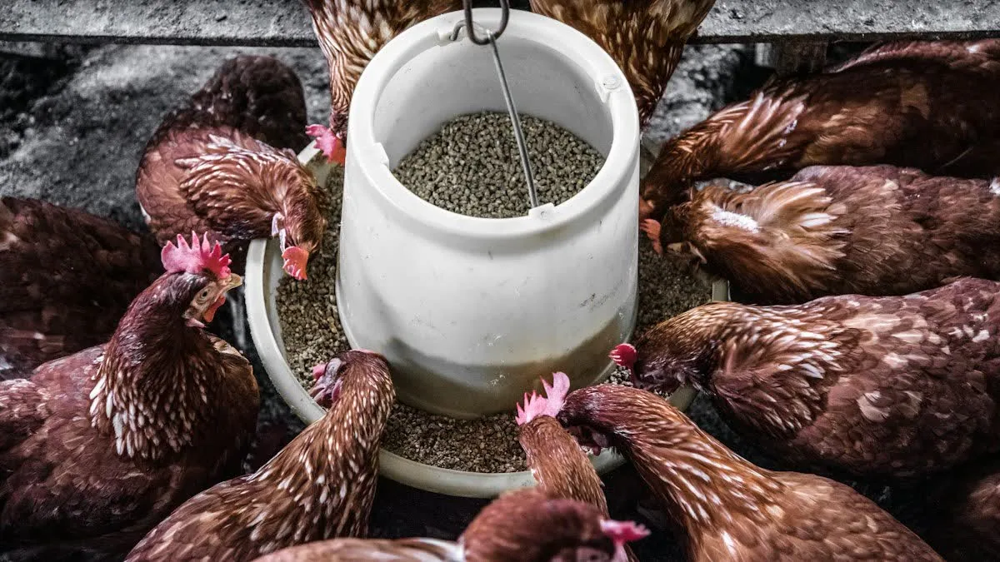
A pullet farm has to feed on time, 3 meals a day, every day. If a worker forgets, the birds go hungry and the owner doesn't know until they visit the farm. Reports like "how many sacks today, how many died, how many sick" end up partly on paper and partly in LINE chat, then get lost and can't be combined.
Feeding times must be exact, but are easy to forget
Pullets need to eat at 06:00 / 10:00 / 16:00 every day. If a meal slips by an hour, laying production drops and the birds get stressed. Workers find it hard to remember, especially on days off or when they're newly hired.
Reports are scattered across notebooks, chats and paper
"How many sacks today?" "How many died in which barn?" Some people type it in chat, some write it in a notebook. When it's time for a monthly summary, nothing can be found and meals can't be compared.
The owner can't see what's happening in real time
A worker may say they've fed the birds when they haven't, or a meal wasn't finished and nobody said so. The owner finds out at the farm or the next day, which is too late.
Workers don't want a new app
Farm workers know LINE well but don't want to download a special app. They install it, forget the password, forget how it works. The UX has to live where they already are.
The owner wants a spreadsheet, not a deep dashboard
The farm owner wants raw data they can edit and send straight to the accountant or vet. No complicated admin panel.
The solution
Put the bot in the LINE group workers already use: reminders on schedule, input through forms, storage in a Sheet
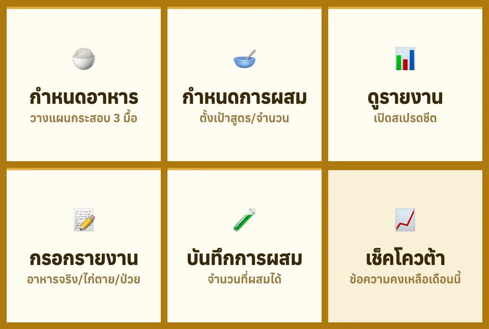
The bot reminds the LINE group at every meal
The "Luk Jiab" bot joins the farm group workers are already in. At 05:45 it sends a bubble with the number of sacks the owner planned; at 08:00 it sends a bubble asking for the report. Three meals a day.
Fill in forms right inside LINE, no app to download
Built with LIFF (LINE Front-end Framework): tap a button in the bubble and the form opens inside LINE. No sign-up, no login, nothing extra to install.
Google Sheet as the source of truth
Every plan, report and log is appended to a Google Sheet. The owner can open it, filter, sort and export to Excel without learning a new system.
A confirmation dialog to prevent mistakes
Before any form is submitted, a modal summarizes everything (6 values + date + total) and asks for confirmation, because typos are easy on a phone and hard to fix later in the Sheet.
The menu only appears for the word "main menu"
The bot sits in a group where workers chat normally, so replying to every message would be annoying. The keyword "main menu" is the only trigger, so the bot stays quiet like any other group member.
User Flow
A day with Luk Jiab: the owner plans at night, the bot runs on its own all day
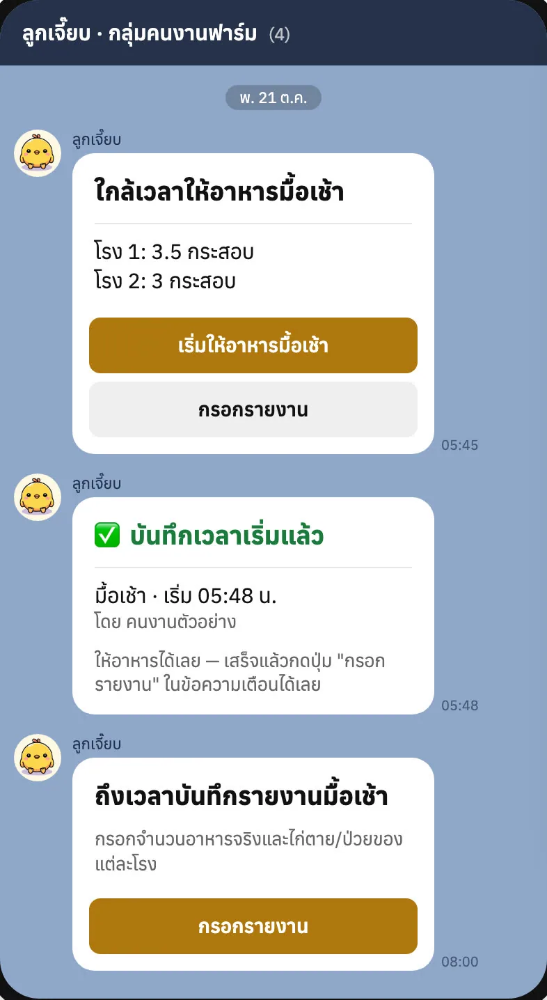
Owner plans
At night the owner fills in 3 meals × 2 barns for the next day
Bot reminds workers
At 05:45 it sends a bubble with the number of sacks and a "Start feeding" button
Workers report
At 08:00 the bot sends a report bubble → the worker taps it → fills in 6 fields
Stored in the Sheet
Data goes into the Sheet immediately, with duration/delay calculated automatically
Tech Stack & Architecture
A stack chosen so one person can run the whole system: no database to manage, no admin UI to build
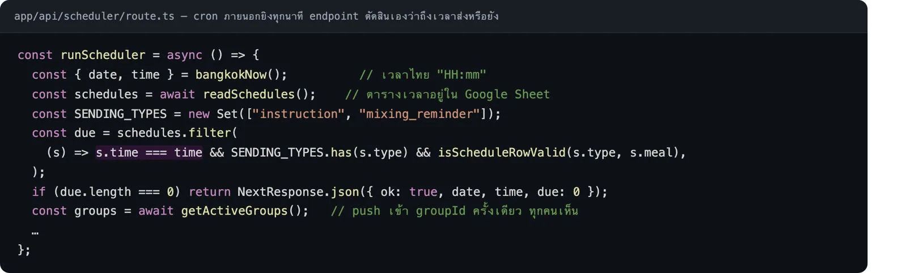
LINE LIFF opens forms inside LINE, with no app to download and no extra login · Google Sheets API is a database the owner can open natively, so no separate admin UI is needed · Vercel Hobby is free and deploys automatically on git push · cron-job.org is free and fires every minute (Vercel Hobby cron is limited to 2 jobs/day, which isn't enough). The endpoint checks the time itself and covers all 6 trigger times a day.
What I built: 8 core features
The full loop, from planning to stored data
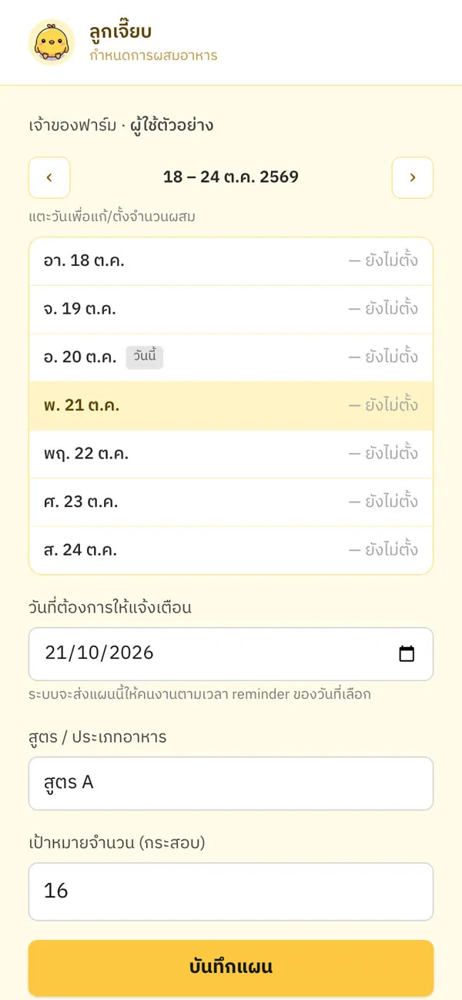
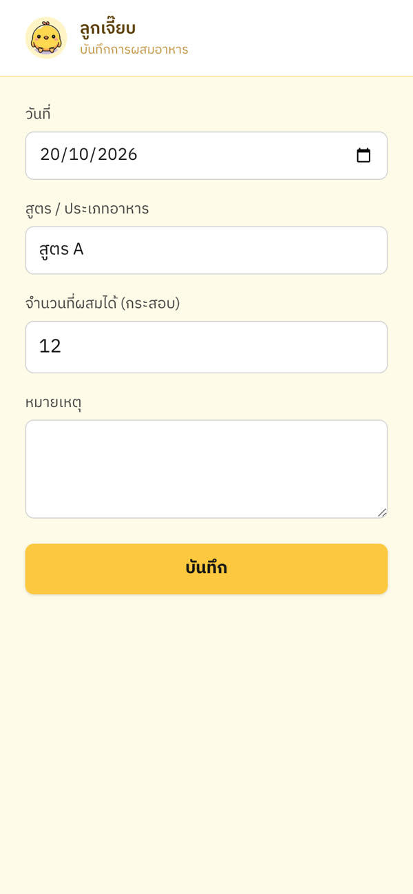
Plan 3 meals (owner)
A grid table of 3 meals × 2 barns, all visible in one viewport, with a running total and a confirm dialog before saving 6 rows
Submit report (worker)
6 fields (sacks/dead/sick × 2 barns) + a note. Duration and delay against the target time are calculated automatically.
Log feed mixing
Formula + amount mixed + notes, logged in a separate tab to track stock
View report (owner)
A card that opens the Google Sheet directly, so the owner can see raw data and filter, sort or export right away
Carousel Menu
A Flex carousel of 4 cards ordered owner-first (plan → mix → view report → submit), triggered by the keyword "main menu"
Instruction & Report Bubble
Two kinds of Flex bubble: instruction (with sack counts + a start button) and report reminder (a button that opens the LIFF form)
Scheduler + Dedup
An endpoint checks Bangkok time every minute, sends bubbles on schedule, and uses reminder_log to prevent double sends
Group Chat Support
The bot can join LINE groups: it registers the groupId automatically on join and pushes to the group instead of looping over users
What it looks like in the LINE group
The morning flow: the bot sends the instruction → a worker taps start
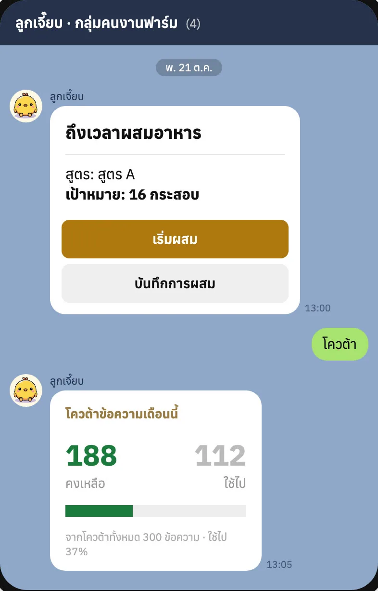
Breakfast feeding is coming up
Tapped "Start feeding" >
Breakfast start time recorded. You can start feeding now.
When you're done, tap "Submit report" in the bubble I'll send you.
Time to submit the breakfast report
Enter the actual feed used and the dead/sick birds for each barn
What the LIFF forms look like
Plan 3 meals on a single screen (LIFF Tall size, limited viewport)
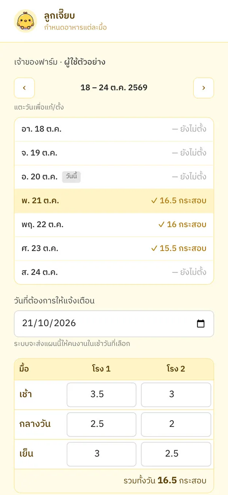
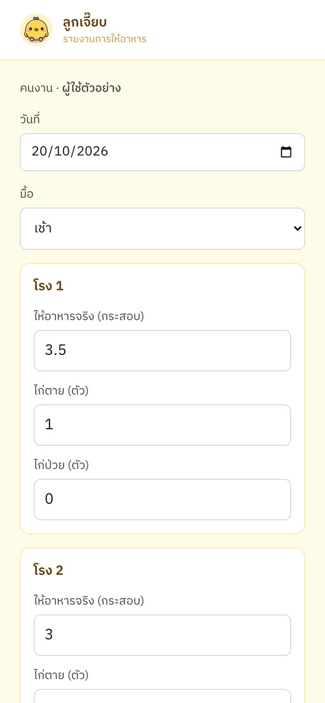
Luk Jiab
| Meal | Barn 1 | Barn 2 |
|---|---|---|
| Morning | 3.5 | 3.0 |
| Midday | 2.5 | 2.0 |
| Evening | 3.0 | 2.5 |
Hacking the problems
6 problems I had to solve myself: design constraints + LINE platform limits + serverless quirks
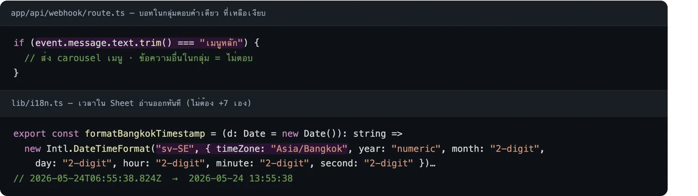
LIFF Tall size: 6 fields in 1 viewport
I chose LIFF size Tall (~675px usable), but the owner has to fill in 3 meals × 2 barns = 6 fields at once. With a lot of scrolling, the keyboard covers the bottom rows.
A bot in a group that replies to everything = noise
The bot sits in a group where workers chat normally. Replying to every text message ("hello", "when?", and so on) would instantly become spam.
event.message.text.trim() === "เมนูหลัก" (the Thai for "main menu") as the only trigger. For any other message the bot stays completely silent, so it behaves like a normal group member that only speaks when called.Push to the group, not a loop over users
Workers in the group never added the bot 1-on-1 → LINE blocks pushMessage to their userId → the scheduler can't send bubbles to everyone.
join event and saves the groupId to the sheet tab groups → the scheduler pushes to the groupId (sent once, everyone in the group sees it). Postbacks still capture the userId of whoever tapped. This gives both broadcast efficiency and member identification.Timestamps hard to read in the Sheet
At first timestamps were stored as ISO UTC (2026-05-24T06:55:38.824Z). The owner couldn't read them and had to add 7 hours every time.
formatBangkokTimestamp() uses Intl.DateTimeFormat("sv-SE", { timeZone: "Asia/Bangkok" }) to produce YYYY-MM-DD HH:mm:ss in Thai time the owner understands immediately, + parseBangkokTimestamp() converts it back to a Date for duration/delay calculations, + an idempotent migration script converts old data to the new format.Vercel Hobby cron is limited to 2 jobs/day
I needed 6 triggers a day (5:45 / 8:00 / 9:45 / 11:00 / 15:45 / 18:00). The Vercel Hobby plan only allows 2 cron jobs a day.
bangkokNow().time) → cron-job.org (free, can fire every minute) calls it 1,440 times a day → the endpoint returns due=0 whenever it isn't time (95% of calls). No LINE quota is wasted, and new schedules can be added later without touching the cron config.Next.js 16 Turbopack + bun froze the machine
During development, bun dev (Turbopack by default) + ngrok + incoming traffic → the MacBook froze with a kernel panic and needed a forced reboot, twice in a row.
next dev --webpack (still supported in Next.js 16). It runs stable at 2.3GB RSS. Turbopack stays in a backup script, dev:turbo, to try again after a future Next.js upgrade. Lesson: new tech always needs a fallback path.Design decisions to discuss with the client
UX trade-offs that aren't in any playbook: they need explaining and deciding together
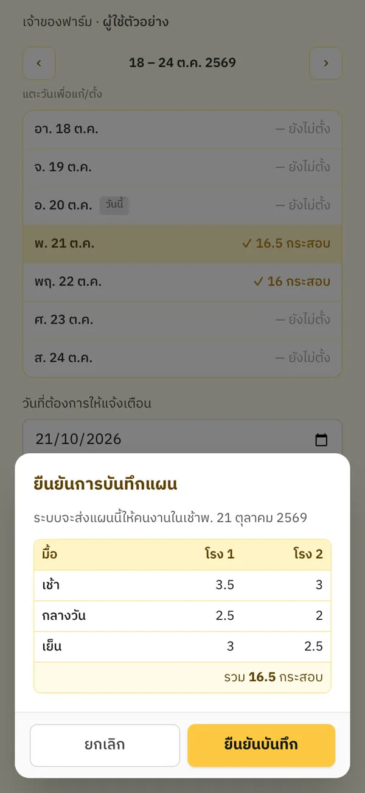
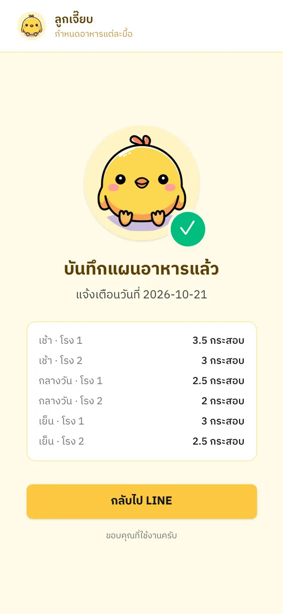
Every MVP has many trade-offs. Reply to every message or only a keyword? Native date picker or custom? Does the owner mark the group manually or is it auto-detected? There are several "right" answers. My job is to lay out the options, explain the trade-off of each, and not choose on the client's behalf.
Confirm Dialog
A reusable component across all 3 forms: summarize the data before saving
Keyword Trigger
Only "main menu": quiet in the group, no noise
Tomorrow Prefill
Date defaults to today + 1, because the owner plans at night
Sheet Card
"View report" = open the Google Sheet directly, no dashboard built
What I took away from this project
5 lessons from building Luk Jiab, from requirements to production
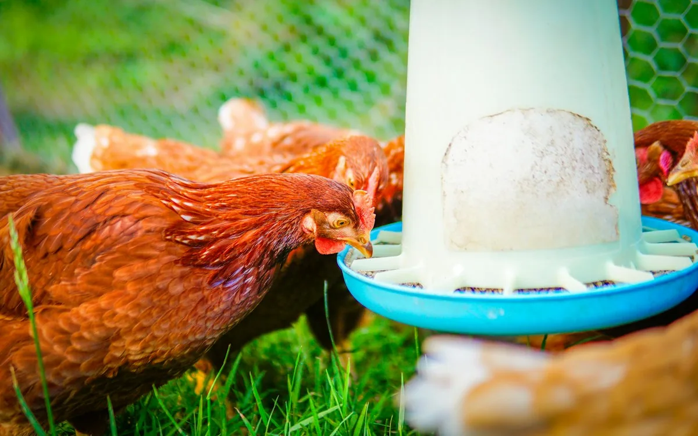
Farm workers already use LINE. Choosing LIFF over a separate mobile app meant zero adoption friction: nothing to download, no sign-up, no new UI to learn. Lesson: picking a platform the user knows matters more than picking a stack the developer knows.
Google Sheets is "a database the owner can open, filter, export and share". For a low-traffic MVP whose owner is already a spreadsheet power user, Sheets beats PostgreSQL on every count: no admin UI to build, no migrations to think about, no hosting to pay for. Lesson: choose storage for the owner, not by convention.
A form that writes 6 rows to the Sheet at once → a mistake has to be fixed in the Sheet by hand, which is painful. Every Luk Jiab form has a ConfirmDialog that summarizes all values before saving. It adds 2 seconds but cuts errors a lot. Lesson: friction in the right place is a feature, not a bug.
LIFF Tall size limits the viewport → it forced a 3×2 grid instead of 6 stacked inputs → the overview is much better. With more space I might have defaulted to a long, scrolling stacked layout. Lesson: a constraint is a design partner, not an obstacle.
During the session I switched ISO timestamps → Bangkok format (with a migration), Turbopack → webpack after the freeze, the menu trigger from always-respond → keyword, and added group support after the MVP. Every change was documented and committed as a checkpoint. Lesson: build fast and iterate fast rather than plan for a long time.